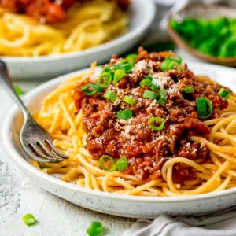

Spaghetti Bolognese

Description
My go-to rich and satisfying weeknight bolognese. Ready in 30 minutes! Simple ingredients, without skimping on taste. This recipe was taken from kitchen sanctuary which you can find here. You can find a link to a video showing how to make this dish here.
Info
- Prep time - 5 mins
- Cook time - 25 mins
- Total time - 30 mins
- Course - Dinner
- Cuisine - Italian
- Servings - 4
- Calories - 561 kcal
Ingredients
- 1 tbsp olive oil
- 1 onion - peeled and finely diced
- 2 cloves garlic - peeled and minced
- 1 carrot - peeled and finely diced
- 3 chestnut mushrooms - finely diced
- 1 lb (450g) minced beef - I often use 400g instead of 450g, as shops seem to sell them in 400g packs these days. So if you can only get a 400g pack, that's fine.
- ½ cup (120ml) red wine
- 3 tbsp tomato puree
- 1 tsp dried oregano
- ½ tsp dried thyme
- 1 tbsp Worcestershire sauce
- 1 beef stock cube - crumbled
- 28 oz (2 x 400g) canned chopped tomatoes
- ½ tbsp light brown sugar
- ½ tsp salt
- ½ tsp black pepper
- 10 ½ oz (300g) dried spaghetti or fresh pasta
To serve:
- Small bunch spring onions (scallions) - chopped
- grated parmesan
Steps
- Heat the oil in a frying pan over a medium-high heat. Add the onion and cook for 5 minutes, stirring often, until the onion softens.
- Add the garlic and cook for a further minute.
- Add the carrot and mushrooms and cook for a further 2-3 minutes.
- Add the minced beef and cook for 5-6 minutes, until browned. Stir often, breaking up any large chunks of meat with a spatula.
- Add the wine. Bring to the boil and let it bubble for 2-3 minutes, until reduced by three quarters.
- Add the tomato puree, oregano, thyme, Worcestershire sauce, beef stock cube, tinned tomatoes, brown sugar, salt and pepper. Stir and bring to the boil. Turn down the heat and simmer for 15 -20 minutes until thickened.
- Meanwhile, boiled a large pan of salted water. Add the spaghetti and cook for 10-12 minutes until al dente.
- Drain the spaghetti and divide between 6 bowls.
- Spoon the bolognese on top of the spaghetti and sprinkle on the spring onions and parmesan before serving.
Go back